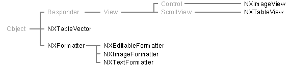

Enterprise Objects Framework Release 1.1 Copyright ©1995 by NeXT Computer, Inc. All Rights Reserved.
| 3 |
User Interface Objects
| Library: | libEOInterface_s.a | |
| Header File Directory: | /NextDeveloper/Headers/eointerface |
| Introduction |
| In addition to its core functional classes, the interface layer of the Enterprise Objects Framework provides a few classes and protocols for displaying and editing data. The primary user interface object class is NXTableView, which displays an editable data of values for the properties of enterprise objects. The other class, NXImageView, displays an image within a frame.
This introduction lists the individual classes and protocols for the user interface objects defined by the interface layer, suggesting entry points into the reference material. All of the reference material for the Enterprise Objects Framework assumes that you're familiar with the Foundation Kit and with the concepts described in the Enterprise Objects Framework Developer's Guide.
Classes and Protocols Figure 3 shows the user interface object classes of the interface layer. An NXImageView displays a single image within one of three frame styles. It can be used as an auxiliary to an NXTableView, displaying an image for the row selected in the table view. An NXTableView displays data in tabular form, with rows representing individual enterprise objects (or other kinds of records) and columns representing their properties. An NXTableVector manages a single column in a table view, and the subclasses of NXFormatter (an abstract class) handle the display of values within each field of the table view. NXEditableFormatter displays text and allows the user to edit it, NXTextFormatter is for read-only display of text, and NXImageFormatter displays a single NXImage within a field. |
|  |
| Figure 3. User Interface Object Classes
The table view classes make use of various protocols. NXFormatterValidation and NXFormatterViewEditing handle verification of edits made by formatters. NXTableDataSources declares the methods used by objects that provide data to table views. NXTableVectors declares much of the interface implemented by the NXTableVector class. Finally, NXTableValue declares the interface for the values displayed by a table view. |